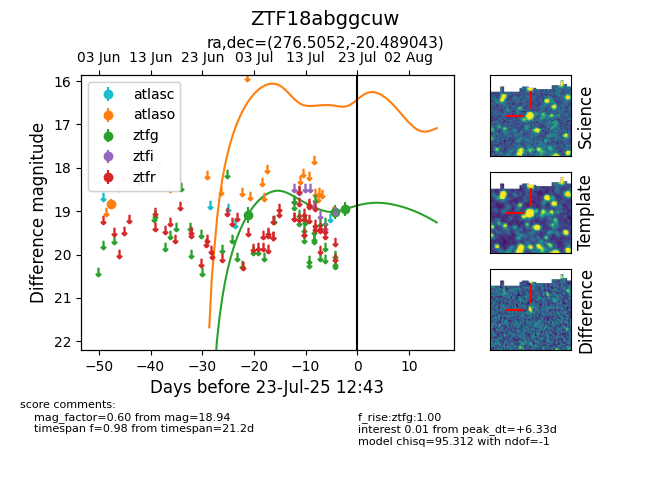

Target ZTF18abggcuw at 2025-07-23 12:43, see:
FINK: fink-portal.org/ZTF18abggcuw
Lasair: lasair-ztf.lsst.ac.uk/objects/ZTF18abggcuw
ALeRCE: alerce.online/object/ZTF18abggcuw
alt names
ZTF18abggcuw (ztf,fink)
coordinates:
equatorial (ra, dec) = (276.5052,-20.48904)
galactic (l, b) = (11.8556,-3.86108)
photometry
last atlaso=18.83, ztfg=18.94
1 atlaso, 3 ztfg detections
